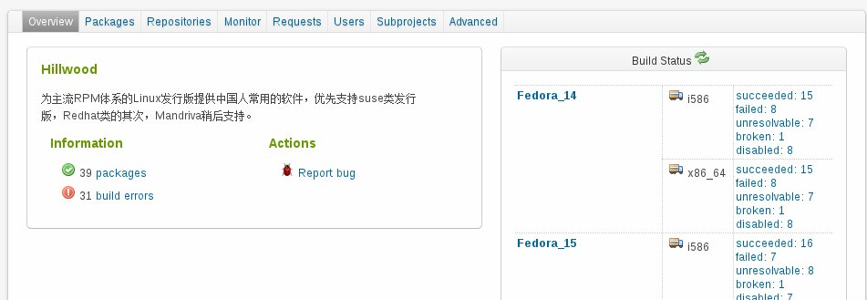
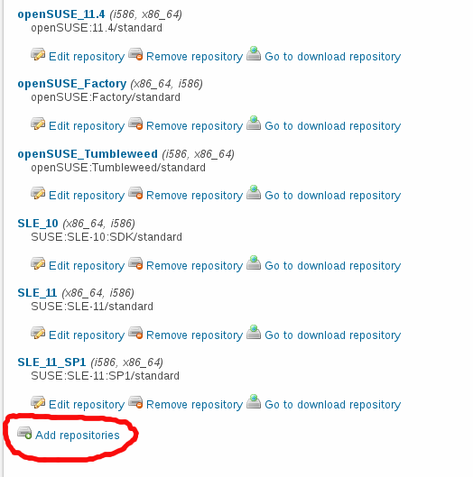

Open Build Service构建发行版安装包有两种方法，第一种是通过web页面的控制面板构建，第二种通过opensuse提供的一个osc工具构建，两种方法各有优势，这里先介绍第一种方法。
首先请先看web控制面板的截图：

右侧是是发行版支持列表，里面列出了你激活支持的发行版及其构建体系，刚创建OBS项目的时候这个列表是空的，需要从Repositories添加。顶有又一排菜单列出了OBS所有的功能，其中Overview、Packages和Repositories是我们常用到的。Overview菜单是控制面板首页，也就是上面截图显示的页面；Packages菜单的功能是上传构建包需要的文件；Repositories菜单的功能是开启和关闭发行版的支持。而使用OBS的第一件事就是添加支持的发行版，所以首先进入Repositories菜单，点击进入Add repositories，添加要支持的发行版，然后保存，如下图：

然后就可以切换到Packages菜单创建安装包了。进入到Packages菜单首先要创建一个单独的软件包项目，右侧有三个链接，我们一般用到的是第一个，点击Create new package创建一个软件包项目，然后进入到软件包项目，切换到Sources菜单，上传构建安装包所需的spec、补丁以及源码包文件，上传完毕后，编译会自动开始。如果编译成功，生成的软件包会自动的放到相应发行版的安装源里面，你可以将安装源添加到软件管理器中去安装。
下面再说说Packages菜单中第二个链接Branch package from other project的功能，这个链接的功能是从其他人的项目中链接现成的软件项目，你只需要输入别人的项目名称、软件项目名称以及自己的命名，就可以把别人的软件项目复制过来。这个功能只要为了解决编译过程中的依赖关系。至于第三个链接Create patchinfo，不好意思，山木也不知道是干什么的，几乎也没有用过，如果你英文好，只有自己去看官方的wiki了。